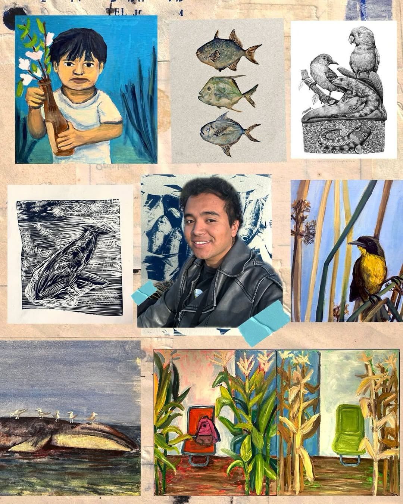

Thiago Mar
Le pertenezco a la tierra

Declaración Artística
Mi práctica artística nace de lo cotidiano y del diálogo constante con la naturaleza que resiste dentro de la ciudad y de mis visitas a diversas ANP. Me construí a partir de la experiencia íntima de habitar la periferia de la Ciudad de México, un territorio donde los grandes espacios urbanos dejan de ser ajenos y se transforman en escenarios compartidos de cansancio, espera y encuentro.
El tránsito diario, no solo marca el cuerpo, también moldea la mirada. En ese desgaste aparecen recuerdos, vivencias y afectos que nunca regresan de la misma manera. Me interesa ese momento frágil en el que lo vivido se desvanece y, al mismo tiempo, se vuelve materia para crear. Mi trabajo reflexiona sobre la tensión entre el deseo de perseguir un sueño y la dureza de sostenerlo en un entorno que muchas veces resulta indiferente. Desde ahí, mi obra busca abrir espacios de contemplación y empatía, donde lo íntimo y lo urbano se entrelazan. Me interesa resignificar esos lugares de paso aparentemente impersonales como territorios sensibles, cargados de memoria, agotamiento y esperanza. En ellos, lo individual deja de estar aislado y se convierte en un eco compartido.
Semblanza
Thiago Mar es egresado de la Licenciatura en Diseño y Comunicación Visual por la Facultad de Artes y Diseño de la UNAM (2019–2023). Su trabajo se desarrolla en torno al estudio de los seres vivos y su conexión con el planeta que habitamos,. A través de su obra, reflexiona sobre las múltiples relaciones que mantenemos con estos espacios: desde el consumo de los alimentos que nos proveen hasta su dimensión como territorios de contemplación, experiencia y autoconocimiento. Participante activo de promover y organizar encuentros de ciencia ciudadana y difusión cultural.
Ha participado en la gestión, curaduría y museografía de diversos eventos independientes, entre los que destacan: Resensibilizando los fantasmas, exposición presentada en el Metro de la Ciudad de México; así como las exposiciones "Hoy acelerado, mañana también" en la Escuela Nacional de Antropología e Historia (ENAH), y Aproximaciones del Natural en SEMARNAT